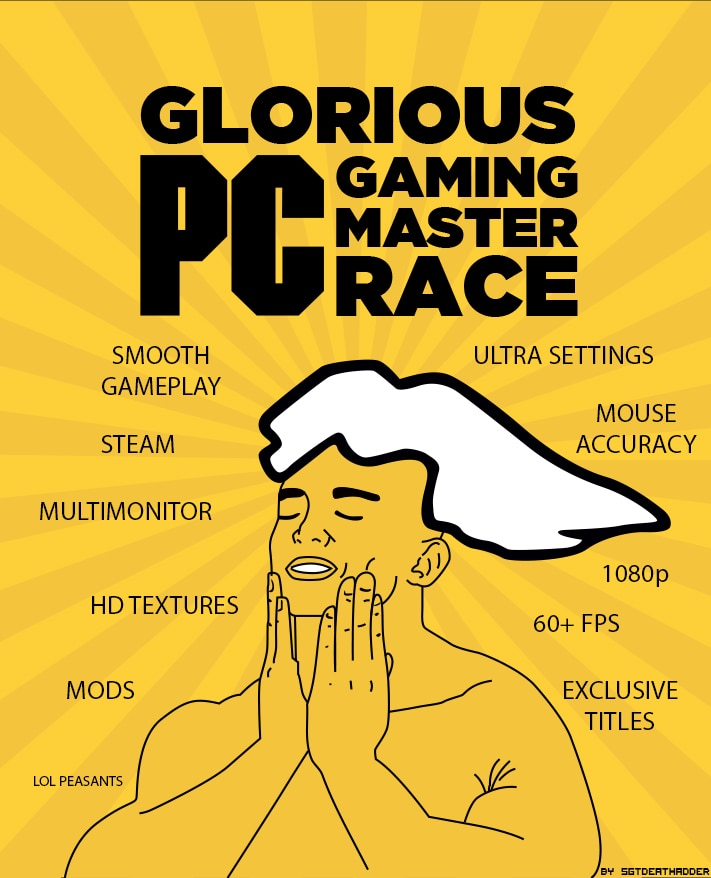

i have came from afar among many things, one of them is games!
from playing games to modding games, i can add some funny modifications from adding a nextbot, let alone three from Steam! For those that have garry's mod
trust me, coding and editing would sometimes be a pain because of loading into the map everytime with it.
Me personally i have came a LONG way since the early 2000's. My early childhood got me hooked onto computers, and since then, i have major interests of playing on computers, and owning my own (which i do today 😃) and now working on other computers. sometimes my own computer. If I am working on a computer, it ain't going to be on my main computer, it'll be on an older computer which i would consider it a retro build
among my style. Although I was going to post an update log somewhere, until, i am going to put the old computer up for e-Waste someday. The old computer is on it's last legs anyway, it's kinda been sitting there for about 6 or so months, not being ran so much.
Since my childhood, i was heavily interested in playing games on a computer, which thank god for flash games being invented. BTW i use flashpoint to reuse the memories of my childhood.
though i am not that much of a console gamer cause i wanted to game more often on PC. hence why internet memes like the following:
not only i play and mod games, i also make music, animate on this YouTube Channel called Sandbox Cinematics. I'm telling you if you check out the channel, most videos are going to be based off of Garry's Mod animations. Which I took a lot of blood, sweat and tears making not one but 2 videos.
PS; most of the dailouge is ment for mature sitcom show settings among the demographic.
how did i game on my pc right now it's a good question.
I am mentioning my specs of my PC i currently have: